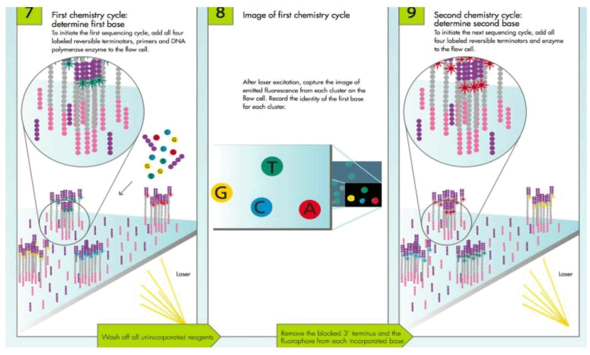
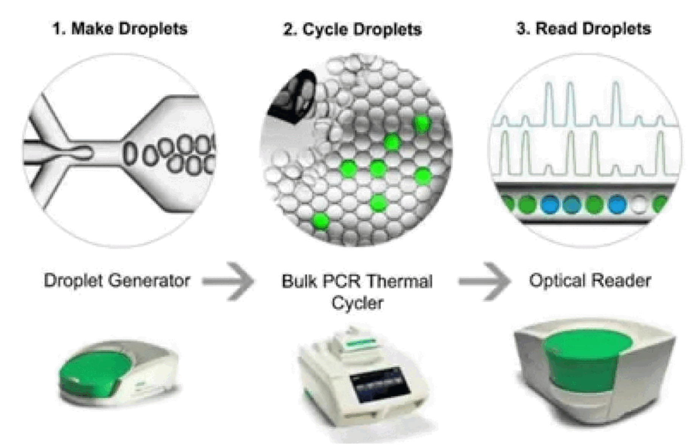
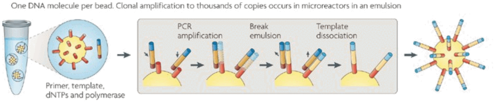

Before we get into examples, let’s talk about some of the components of a multiplex characterization experiment. (list them).
For starters, here’s a video that nicely describes how deep sequencing works on the Illumina platform. The video describes how you process genomic DNAs for sequencing, which is the normal use. There is a step in the video in which a PCR product is loaded onto a flowcell. That is the part where the multiplex characterization experiment and the genome sequencing become the same. In our characterization experiments, we’ll generate a similar PCR product through some other means.
Tools of the Trade.
Next-Gen Sequencing (NGS)
HiSeq: Sequencing by Synthesis
https://www.youtube.com/watch?v=fCd6B5HRaZ8

https://nanohub.org/resources/17703/watch?resid=17816
Also called Massively Parallel Sequencing (MPS)
Next-Gen Sequencing (NGS).
Next-Gen Sequencing (NGS)
Illumina HiSeq:
300 million reads per run
run time 1 week
Illumina MiSeq:
25 million reads per run
run time 1 day
Both cost ~$1000-$3000 per run, depending on read length, paired end versus single ended, etc.
454 Sequencing and Ion Torrent:
Other companies, similar products to Illumina in terms of prices and read length/quality
Nanopore sequencing:
Long length, lower resolution
Pacific Biosciences:
Long length, lower resolution, higher cost per read
Numbers from Google
A nanopore instrument uses a voltage to drive the DNA through a protein-based hole in a membrane. As the DNA goes through, there are current differences depending on the base passing through, which can be interpreted as a low-accuracy sequence. The lower resolution of these instruments makes them atypical choices for multiplex characterization—you can’t read barcodes, there are probably use cases for it. The data would be adequate for part-level diversification. New methods of error-correction could ultimately make this an all-purpose tool.
https://en.wikipedia.org/wiki/Nanopore_sequencing
The Pacific Biosciences method is a single-molecule sequencing-by-synthesis approach that results in very long low accuracy reads analogous to a nanopore. The read lengths are very long-- in the 10’s of thousands of bases per read. The use cases would be similar to nanopore in the context of multiplex characterization.
https://en.wikipedia.org/wiki/Single-molecule_real-time_sequencing
Next-Gen Sequencing (NGS).
The PCR products for illumina sequencing look something like this. The P5 and P7 sequences are on the ends followed by MiSeq primer binding sequences, and then a variable-length spacer, and then 20bp sites specific to your experiment. Inclusion of the variable-length spacer is a technicality. The likely high-sequence similarity of a multiplex characterization sample messes up the reading, so you have to create some variability by putting randomness here. A sample like the above can be read in both directions (that’s paired-end reads) or just one, and based on which instrument and which run you do, it can be 30bp reads up to 300bp reads.
Paired-end Illumina samples.
So, if you did paired-end reads of a sequence like this, what you’d actually get in the data file is something like the sequence here starting with the variable region and including whatever library-specific priming sites you used.
MiSeq Data.
A very common trick in using deep sequencing as an analytical tool involves writing dna barcodes, as noted here in green. If you keep constant the bases flanking a custom barcode, you can algorithmically extract the barcode from the sequence by scanning for the context. At first glance, it may not be obvious why you’d need to barcode a gene when you could just use the gene itself as an identity marker.
Barcoding.
In practice, your read will be only 250bp or shorter
There are multiple situations you find yourself in when constructing these assays that require a barcode. For example, the genetic element you are trying to characterize might be very long, or it might be a combinatorial library of part combinations. You’ll only get the first <250 bp of the construct in the read, so the identity of this read is underdetermined. By barcoding the entire construct, one only needs to read this short sequence at the beginning to know which full-length sequence it corresponds to.
Barcoding.
Barcoding also allows you to separate the orf from the sample you are sequencing. In many of these experiments, it is necessary to PCR out the sample required for sequencing. If the genes aren’t all the same length, or they don’t all have the same sequence context, then you can’t PCR them all out in an unbiased way. By separating the barcode from the sequence being probed, you can insert a good PCR priming site in between thereby standardizing the length and much of the sequence for the resulting PCR products. Alright, so that’s barcoding, and ultimately these are just little sequences that you add into your designs to track them. The length of the barcode is chosen based on how much diversity you need to track. For a billion-member library you’d need minimally 15 bases (4^15 is around 1 billion).
Barcoding.
Putting DNAs into cells often becomes a limiting component of a characterization experiment, so there is a lot of interest in moving to in vitro methods. The simplest artificial ‘cell’ is an Eppendorf tube, but much smaller compartments can be constructed using very simple methods such as emulsions or liposomes.
You can encapsulate pretty much any aqueous liquid you want into an oil-based micelle which results in an emulsion such as shown in the image. You just vortex together mineral oil, surfactant, and your aqueous sample, and you get little droplets. Technologies for making liposomes also exist, and there are methods of controlling the sizes and polydispersity of these things. For example, Fletcher lab has developed an instrument that injects liquid across a bilayer to form highly self-similar liposomes. A common method is to dilute a DNA sample to the level at which typically 1 DNA molecule becomes isolated within a micelle, and then biochemical reactions occur to that one molecule.
Emulsions and Liposomes.
Digital Droplet PCR

There are also now instruments for generating very precise emulsions, and they are commercially available for doing digital droplet PCR.
https://www.youtube.com/watch?v=e5cl0HEUY_c
Digital Droplet PCR.
On-bead emulsion PCR
PMID: 19997069

Some techniques will require more than 1 DNA within a micelle or liposome. This can be achieved by clonal on-bead PCR. Here, you dilute your template DNAs to single-molecule-per-micelle concentrations along with PCR reagents and beads decorated with one of the two pcr primers. The other pcr primer is provided in solution. You put that into an emulsion and then put it on a thermocycler. The micelles are stable to the conditions of the thermocycler, so PCR only occurs in small compartments. Thus, only one template DNA is amplified in each micelle. Since one of the primers is attached to the bead, these clonal copies all end up attached to the bead. The experiment results in a sample of beads in which each bead is decorated with around 1000 copies of a single genetic sequence.
On-bead emulsion PCR.
Finally, we have in vitro translation. These are basically fractions of E. coli, wheat germ, or rabbit reticulosites that are able to biosynthesize proteins in vitro. There are two types: TxTl and Tl. This is something that can be made in the lab, and many labs do that. It is also commercially available from NEB and the like. The PURExpress® kit from NEB are more pure version of Tl– it only includes the ribosomes, tRNAs, synthetases, amino acids, ATP, and elongation factors needed to support translation. There are more complex preps like an S30 extract that also have some transcriptional activity and other cellular processes, hence the name TxTl. It is very common to include T7 RNA polymerase to a Tx or TxTl mix to provide a large amount of mRNA of your gene of interest.
In vitro translation systems are their own subject of synthetic biology, and Jewett and Swartz are the labs most known for developing the biochemistry of modern systems. Richard Murray also has pioneered development of ‘breadboarding’ with small TxTl reactions carried out in parallel. When combined with micelles or liposomes, you obtain a sort of pseudo-cell that is very easy to produce at high volume simply by vortexing together liquids.
In vitro translation, TxTl.